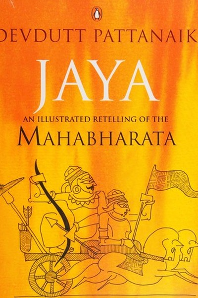

Library › Power & Strategy
Jaya: An Illustrated Retelling of the Mahabharata — Summary & Key Lessons

The Mahabharata as a mirror of human choices.
📖 OPEN THE FULL INTERACTIVE BREAKDOWN →🌐 Read it in Hindi, Hinglish, Gujarati, Tamil & 22 more languages — free, with audio.
💡 The Big Idea
Pattanaik's sweeping retelling of the Mahabharata condenses 18 books of the epic into 108 crisp chapters, each ending with a modern interpretation. His core argument: the Mahabharata is not a story of good versus evil but a mirror of human complexity — every character is both right and wrong, every choice has a cost, and the 'victory' of the Pandavas is pyrrhic. The book is a toolkit of Indian wisdom: leadership, duty, desire, family politics and the psychology of decision-making — all inside the world's longest argument about what it means to do the right thing.
🧠 The 6 Key Lessons
Lesson 1: The War You Win Can Still Destroy You
Part 1: The Aftermath
Pattanaik opens by noting the aftermath: the Pandavas win the greatest war — and lose everything they fought for. Their children die, their kingdom is hollowed, and the victory is ash. The lesson: winning is not the same as succeeding. The court case won that destroys the family, the promotion won that destroys the team, the argument won that destroys the relationship — each is a Kurukshetra in miniature. Before you fight, ask: even if I win, what will be left? Some victories are losses wearing a crown.
📖 Example: Yudhishthira, the 'victor', walks away from Kurukshetra in grief — the war's winners and losers are both in mourning. The throne is his; the peace is gone. The practical edge: 'war you win can still destroy you' is not a one-time decision — it's a habit that… Read the full example →
⚡ Do this: Before your next fight, write the cost of winning. If the win destroys what matters, find another path.
Lesson 2: Dharma Is Not a Rulebook — It Is a Judgment Call
Part 2: The Confusion
The epic's heroes constantly ask 'what is dharma?' and never get a fixed answer — because dharma changes with context, role and time. Pattanaik's lesson: right action is not a formula you can memorize; it is a judgment you must make fresh each time. What is right for a king differs from what is right for a brother; what is right today differs from tomorrow. The person who seeks a rulebook for ethics will be paralysed the moment the rules conflict — which is always. The mature mind develops judgment, not certainty.
📖 Example: Arjuna asks Krishna whether fighting his family is right — and receives an answer shaped by his role, his time and his duty. The same act in another context would be murder; here it is duty. Read the full example →
⚡ Do this: Take one ethical dilemma you face. Write it from each of your roles (professional, family, friend) — and see how 'right' shifts with the seat.
Lesson 3: Desire Is Not the Enemy — Denial Is
Part 3: The Desires
Pattanaik's reading of characters like Karna, Draupadi and Duryodhana shows desire as a legitimate force that becomes destructive only when denied or unexamined. Karna's lifelong hunger for acceptance drives his tragedy; Draupadi's anger is righteous but unprocessed. The lesson: desires that are named and channelled become fuel; desires that are suppressed become explosives. The healthy professional doesn't pretend ambition doesn't exist — they examine it, aim it, and check its costs. Know what you want, and why, and what it will cost — then choose consciously.
📖 Example: Karna's tragedy is not his ambition but his unexamined need for validation — every destructive choice traces back to the boy who was rejected and never processed it. The real test of this lesson is a bad day: the principle that survives a crisis, a tight… Read the full example →
⚡ Do this: Name your strongest current desire. Write what it's really for, and what it will cost. Choose consciously with both visible.
Lesson 4: The Power of the Question: Asking Beats Assuming
Part 4: The Dialogues
The Mahabharata is structured as dialogues — Draupadi's questions, Yudhishthira's doubts, Krishna's answers. Pattanaik's lesson: the epic's wisdom lives in its questions, not its answers. The person who stops asking has stopped learning; the organization that punishes questions has started dying. The most powerful sentence in any meeting is 'why?' asked without agenda. Build the habit of questioning assumptions — your own first, then others'. The question is the tool; the answer is just its by-product.
📖 Example: Draupadi's courtroom question — 'was I rightfully won?' — is the moment the entire epic pivots, because no one had dared to ask it. The question was the turning point, not any answer. Read the full example →
⚡ Do this: In your next meeting, ask one 'why' question about an assumption everyone is taking for granted. Notice what opens.
Lesson 5: The Leader's Loneliness: Decisions No One Else Can Make
Part 5: The Responsibility
Every leader in the epic — Yudhishthira, Krishna, even Bhishma — carries decisions that no council can make for them. Pattanaik's lesson: leadership is defined by the decisions you cannot delegate. The manager who delegates everything, including judgment, has stopped leading. The price of the un-delegable decision is loneliness — you will make calls that some will call wrong, and you will carry them alone. The mature leader accepts the loneliness as the fee for the role. The alternative is leadership by committee, which is leadership by nobody.
📖 Example: Yudhishthira's choice to stake everything in the dice game is his alone — no advisor could save him from it, and no advisor could have made it. The decision, and its cost, were his. Read the full example →
⚡ Do this: Identify the decision you've been trying to make by committee. Own it, make it, and carry it — that's the job.
Lesson 6: The Story Is the Strategy: How Narratives Win Wars
Part 6: The Retelling
Pattanaik's final observation: the Mahabharata itself is a retelling — 'Jaya' means victory, and the epic was originally sung as a victory song that became a lament. The lesson: whoever controls the story controls the memory, and the memory controls the future. The same events become 'victory' or 'tragedy' depending on who tells them. In business and life, the narrative is a strategic asset: how you frame your story — your company, your failure, your comeback — shapes how others respond to you. Author your story before someone else authors it for you.
📖 Example: The war that the Pandavas' side called 'Jaya' (victory) is remembered as 'Mahabharata' (the great tragedy) — the retelling transformed the meaning. The narrative outlived the event. Read the full example →
⚡ Do this: Write the story of your last significant chapter — as you want it understood. Then check: does the evidence support it? Author deliberately.
✅ 5-Step Action Plan
- Write the cost of your next win before fighting for it.
- Examine one dilemma from each of your roles — see how 'right' shifts.
- Name your strongest desire, its purpose and its price.
- Ask one 'why' about a taken-for-granted assumption this week.
- Author the story of your last chapter deliberately.
⚠️ When This Doesn't Work
Pattanaik's 'the Mahabharata is a library of human motives' is the most psychologically rich retelling ever — and Duryodhana is the case study every reader must sit with: the prince who had everything and lost everything because he could not bear his cousins having anything. Pattanaik's method — retelling from every side — makes Duryodhana's envy feel almost reasonable; the caveat is that this is exactly how envy works, and exactly how it destroys. The book's greatest service is showing that the epic's 'villain' was not a monster but a man — because that is the only way to recognize the same man in the mirror. Envy is the one motive with no upside: understand it, and starve it.
💀 The Graveyard Proves It
🎲 Duryodhana — The Prince Who Burned a Dynasty Because of Envy. Burn: The entire Kuru dynasty — every heir, every ally, a kingdom in ashes. Read the full case study →
💬 Best Quotes from Jaya: An Illustrated Retelling of the Mahabharata
- “The war you win can still destroy you — choose your battles by their true cost.”
- “Dharma is not a rulebook; it is a judgment call made fresh each time.”
- “Whoever controls the story controls the memory.”
Interactive version: mark lessons as read, listen in your language, share quote cards.